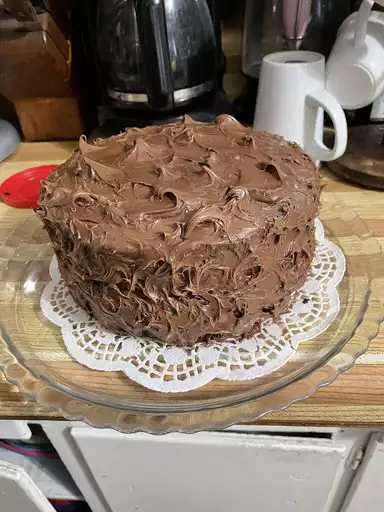
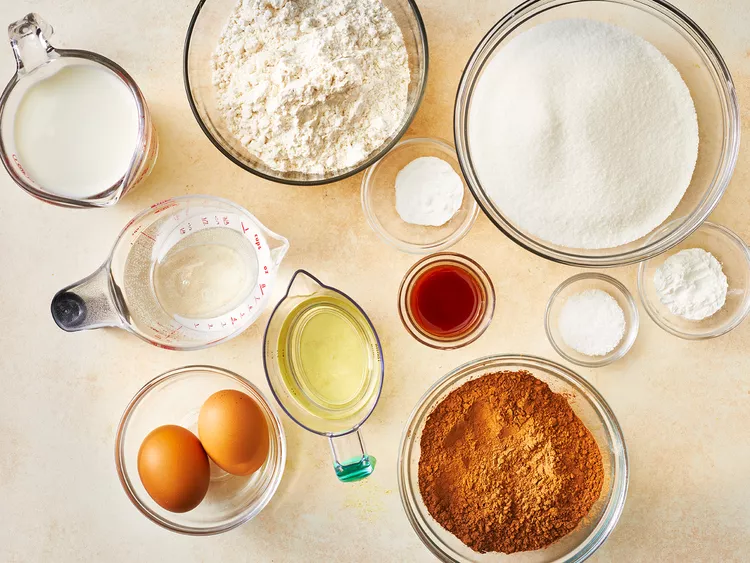
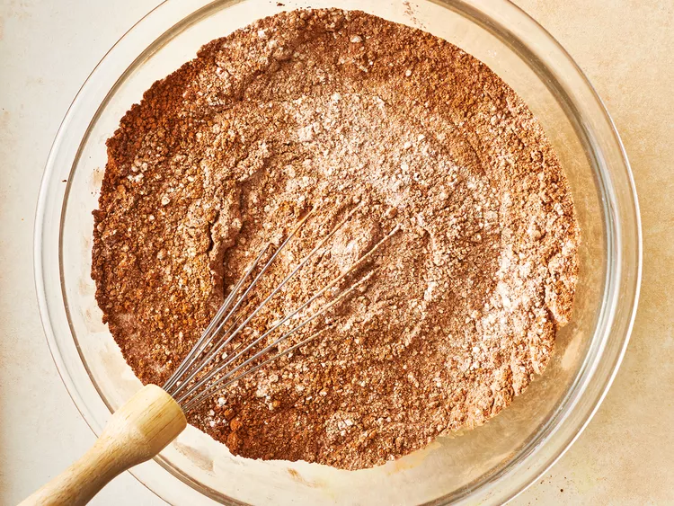
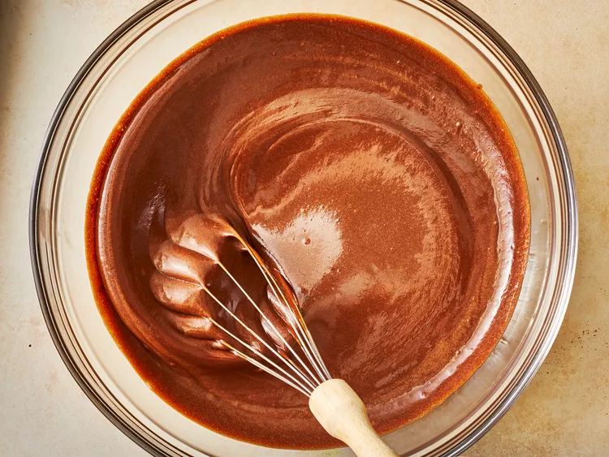
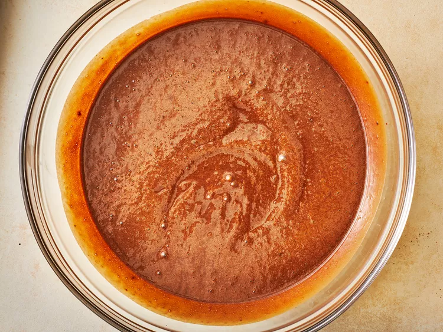
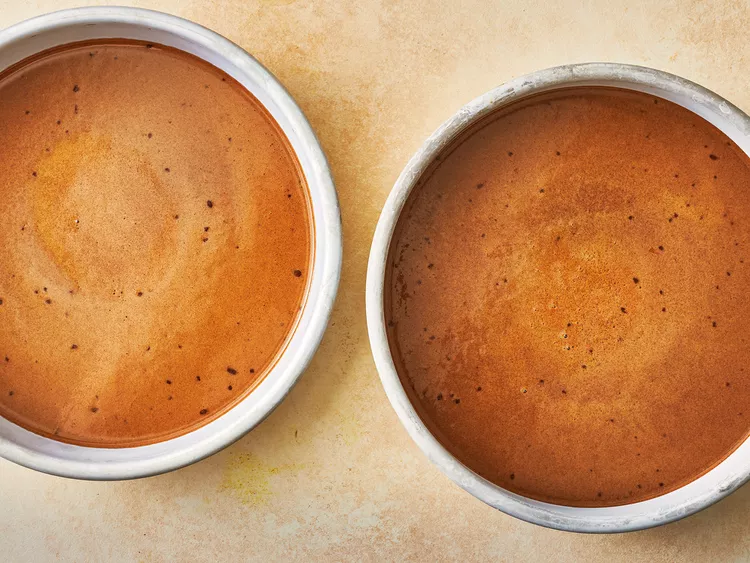
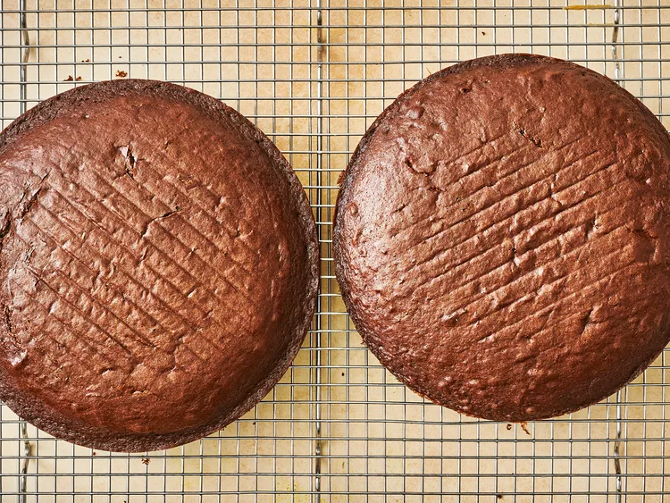
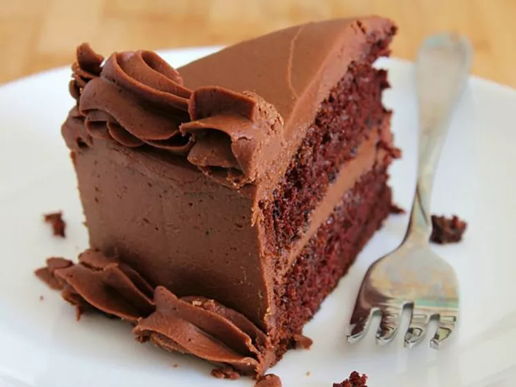

One Bowl Chocolate Cake

Description
This is a rich and moist one bowl chocolate cake. It only takes a few minutes to prepare the batter. Frost with your favorite chocolate frosting.
Skip the store-bought mix and make this one-bowl chocolate cake from scratch. It's almost as easy as the boxed stuff, but it's so much more delicious. The Allrecipes community agrees: You don't want to miss this simple chocolate cake recipe.
Ingridients
- 2 cups white sugar
- 1 ¾ cups all-purpose flour
- ¾ cup unsweetened cocoa powder
- 1 ½ teaspoons baking powder
- 1 ½ teaspoons baking soda
- 1 teaspoon salt
- 2 eggs
- 1 cup milk
- ½ cup vegetable oil
- 2 teaspoons vanilla extract
- 1 cup boiling water
Steps
- Gather all ingredients.

- Preheat oven to 350 degrees F (175 degrees C). Grease and flour two nine inch round pans.
- In a large bowl, stir together the sugar, flour, cocoa, baking powder, baking soda and salt.

- Add the eggs, milk, oil and vanilla, mix for 2 minutes on medium speed of mixer.

- Stir in the boiling water last. Batter will be thin.

- Pour evenly into the prepared pans.

- Bake 30 to 35 minutes in the preheated oven, until the cake tests done with a toothpick. Cool in the pans for 10 minutes, then remove to a wire rack to cool completely.

- Enjoy!

Home